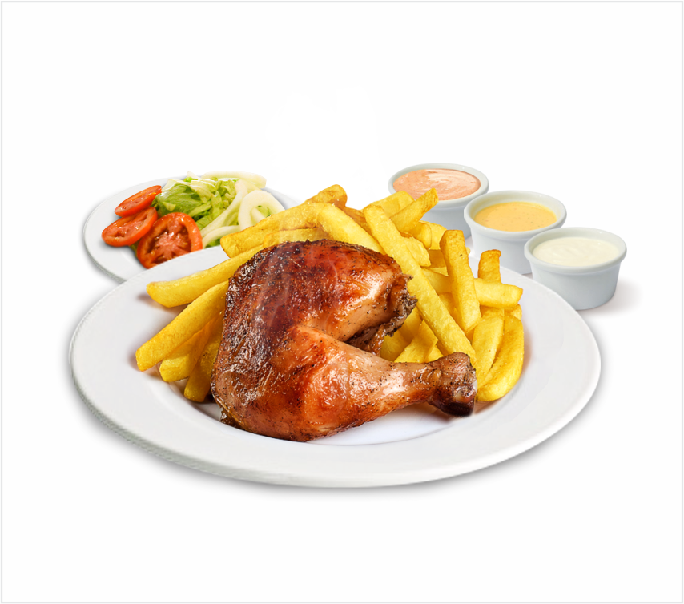

If you're seeking to infuse your kitchen with a dash of flavor and culture, it's time to delve into some
unique Peruvian recipes! The rich fusion of cultures in Peru has given rise to dishes brimming with
spices and ingenuity.
From cherished comfort foods like pollo a la brasa (rotisserie chicken) and lomo saltado (stir-fried
steak) to distinctive street eats, Peruvian cuisine offers something for every palate.
So, gear up for an exciting culinary escapade and uncover the wonders of these delightful Peruvian
dishes, introducing incredible new flavors to your table!
1. Pollo a la brasa (Peruvian Chicken)

This Peruvian Chicken, aka Pollo a la Brasa, is an iconic dish that’s very popular for its bold and
delicious flavors.
To make this simple but super flavorful roast chicken you need to make the amazing marinade that has
perfectly tangy, sweet, savory, smoky, and citrusy flavors. Once you perfect it, you can make this
superb dish anytime and anywhere.
Just make sure you marinate your chicken for a good long time to get the delicious flavors. Serve with
Peruvian green sauce to make it more special.
So make this exotic roast chicken for your family and friends tonight.
View Recipe